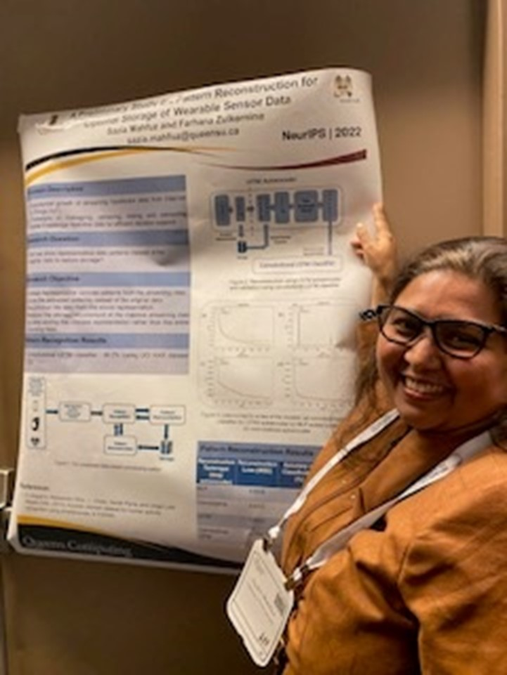
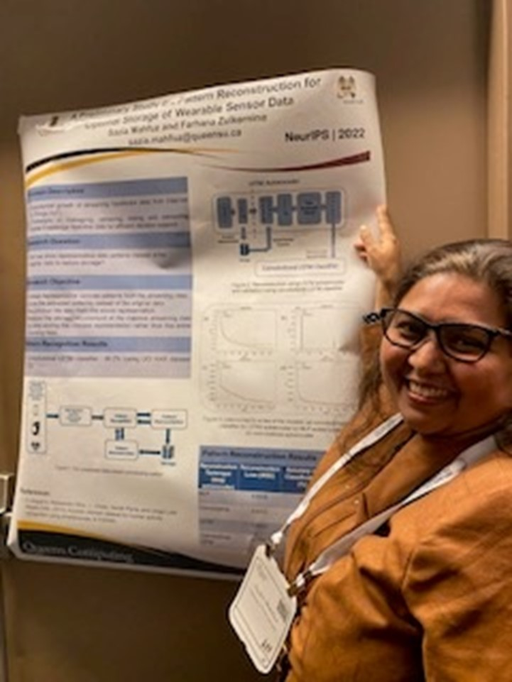

| Alan Chen |
2024-2025 |
Skeleton-based Human Activity Recognition. |
| Wanting Huang |
2024-2025 |
A personalized conversational bot leveraged by a backend storage infrastructure. |
| Zhimu Wang |
2023-2024 |
Comparing open source large language models in summarizing medical text data. |
| Ruoshi Xia |
2023-2024 |
Human activity recognition using video data. |
| Josh Otten |
2022-2023 |
Face recognition and advanced feature extraction from video data. |
| Jing Tao |
2022-2023 |
Medical data analytics with advanced annotation tools. |
| Somiona Tian |
2022-2023 |
Medical data analytics with advanced annotation tools. |
| Wanqing Li |
2022-2023 |
Emotion detection from video data |
| Feiting Yang |
2022-2023 |
Noise reduction from rPPG data for face video based vital sign measurement |
| Yuzhe He |
2022-2023 |
Prediction of blood glucose level using rPPG from face video |
| Max Beninger |
2023-2023 |
Deep learning based vital sign prediction using face video with rPPG method |
| Baorong Wei |
2022-2023 |
Speech and text based emotion detection |
| Asher Song |
2022-2023 |
Streaming big data ingestion and storage in a data lake with metadata processing |
| Steven Wen |
2022-2023 |
Streaming IoT data ingestion pipeline for an advanced data lakehouse |
| Ronan Almeida |
2022-2023 |
Developing an end-to-end pipeline for a Triage-Bot to enable voice-video based medical triage service |
| Eyad El Khodary |
2022-2023 |
Developing the server end storage and query management system for a web application providing medical Triage-bot |
| Griffin Clark |
2022-2023 |
A point-cloud based collaborative perception for autonomous vehicles from an infrastructure point of view |
| Anshul Pattoo |
2021-2022 |
Breast cancer detection using image data. |
| Zihan Zhang |
2021-2022 |
3D Object Detection. |
| Xinyue Li |
2021-2022 |
Optimizing artificial neural networks for multistream data processing for machine cognition. |
| Boqun Shu |
2021-2022 |
Understanding pain levels from unstructured text data in EMR. |
| Aleksandar Ivanovic |
2021-2022 |
Anomaly detection from autonomous metrorail unlabeled sensor data. |
| Tingye Chen |
2021-2022 |
Human Activity Recognition from video data using 2D-3D conversion. |
| Kaiyun Guo |
2021-2022 |
Human Activity Recognition from real time video data using video camera. |
| Siyu Chen |
2021-2022 |
Speech recognition for assistive technology. |
| Hongli Zeng |
2021-2022 |
Speech recognition for assistive technology. |
| Jackson Cai |
2021-2022 |
A streaming cloud IOT data ingestion and analytics framework for human activity recognition. |
| Muyun Yang |
2021-2022 |
Creating Human Activity data using Unity to train a human activity recognition model
|
| James Wang |
2021-2022 |
Using Unity to create HAR dataset for video based human activity recogntion. |
| Katherine Mattatall |
2021-2022 |
Unity project for HAR data generation and analytics. |
| Simin Zhang |
2020-2021 |
A streaming cloud IOT data ingestion and analytics framework for human activity recognition. |
| Tao Ma |
2020-2021 |
Chat text summarization for online medical support services. |
| Yuelin Huang |
2020-2021 |
Chat text summarization for online medical support services. |
| Jacky Li |
2020-2021 |
Driver drowsiness detection for autonomous vehicles. |
| Ruikang Luo |
2020-2021 |
Detection of fire events in video or image data. |
| Jie Li |
2020-2021 |
Predicting Diabetes risk levels from Electronic Medical Records (EMR). |
| Liam Fiebig |
2020-2021 |
Distributed cloud-based IoT data management. |
| Gary Guo |
2020-2021 |
A study of social behaviour and visualization
through cloud platforms. |
| Kevin Rush |
2020-2021 |
A study of social behaviour and visualization
through cloud platforms. |
| Yifei Yin |
2019-2020 |
Detecting Employee Type from Legal Cases using Deep Learning to Analyze Unstructured Text Data. |
| Liam Tharp (Engg-Phys) |
Sep 2019 (1 year) |
Hospital Surge Prediction from Near Real Time Data Feed (partner KFLA Public Health) |
| Brendan Kolisnic (CISC) |
2019-2020 |
Image Object Detection and Classification (industry partner AIdeal) |
| Zili Lou (CISC) |
2019-2020 |
Email classification and Generating Autoreply |
| Zhaoyu Yin (CISC) |
2019-2020 |
Driver Fatigue Detection for Autonomous Vehicle Paradigm |
| Chuyan Zheng (CISC) |
2019-2020 |
Human Face Recognition using Deep Learning for Real Time Conversation |
| Lixian Su (COGS) |
2019-2020 |
Video Object Segmentation using an Attentive Deep Learning Model |
| Ryan Kishenbaum (CISC) |
2019-2020 |
Detecting Disease Progression from Electronic Medical Records using Sequential Pattern Recognition Techniques |
| Sara Langlois (CISC) |
2019-2020 |
Diagnosing Chronic Obstructive Pulmonary Disease (COPD) from Electronic Medical Records using Machine Learning Models |
| Ethan Peters (CISC) |
2019-2020 |
Recognizing Food Items using Deep Learning |
| Martin Woo (CISC) |
2019-2020 |
Hierarchical Pattern Learning using Machine Learning |
| Yinchen Shi (CISC) |
2019-2020 |
Developing an Adapter for Apache Spark Streaming and IBM Streams |
| Harsh Patel (Mitacs Globalink) |
Summer 2019 |
Video based human activity recognition. |
| Yu Liu (Mitacs Globalink) |
Summer 2019 |
Clustering streaming IoT data to extract patterns. |
| Hongkai Chen (CISC) |
2018-2019 |
Recognizing patterns from streaming IoT data |
| Isaac Hogan |
Winter 2019 |
Image Component Separation in Image Super-Resolution. |
| Yuhao Chen |
Winter 2019 |
Intelligent Interactive Robotic System. |
| Chantal Montgomery |
Winter 2019 |
Design and Implementation of a Natural Language Customer Query Platform. |
| Grace (Shihao) Ge |
Winter 2019 |
Design and Implementation of a Scalable and In-memory Data Stream Analytics Pipeline. |
| Kennedy Raltson |
Winter 2019 |
Creating an Intelligent, Multilingual System with IBM Watson. |
| Karen Batch |
Winter 2019 |
Modeling of animal learning. |
| Mitchell Skarupa |
Winter 2019 |
Edge Computing for Wearable Sensors. |
| Alex Wojaczek |
Winter 2018 |
Data mining and deep learning models for analyzing unstructured medical text data. |
| Ruoran Liuk |
Winter 2018 |
Design and Implementation of a Data Lake. |
| Marwa Chermiti (Mitacs Globalink) |
Summer 2018 |
Data mining and deep learning models for analyzing unstructured medical text data. |
| Lucas Rychlo |
Winter 2018 |
Lab reporting to public health Ontario: A cognitive computing approach. |
| Brayden Dewar |
Winter 2018 |
Data cleaning and correction using machine learning techniques. |
| Alex Weatherhead |
Winter 2018 |
Designing autonomous vehicles using optical object recognition. |
| Daisy Barrette |
Winter 2018 |
Training autonomous vehicles using machine learning approach with sensor data. |
| Michael Petkov |
Winter 2018 |
Image object recognition using enhanced resolution. |
| Mohammad Gasmallah |
Winter 2018 |
Video object recognition using deep learning models. |
| Paul Briggs |
2017-2018 |
Using machine learning to predict enemy attacks in computer games. |
| Michael Judd |
Winter 2018 |
Medical text data analytics using NLP and text mining techniques for classification of lower back pain. |
| Alexandra Poole |
Winter 2017 |
Studying the symptoms of dyslexic patients with a view to building an automatic diagnostic tool. |
| Tiffany Leung |
Winter 2017 |
Exploring the applications of virtual reality to improve the quality of education. |
| Sacha Lansky |
Winter 2017 |
Studying the use of bitcoins and blockchains in enabling secure communication in multi-agent systems. |
| Jonathan Creighton |
Winter 2017 |
Developing a hybrid neural network model for stock market prediction |
| Matthew Sherar |
2016-2017 |
Implementing a particle swarm optimization algorithm in Apache Spark for clustering big unstructured text data. |
| Hugo Goncalves |
Summer 2016 |
An ANN model for categorization and selection of music |
| Travis Rhee |
Winter 2016 |
An ANN model for predicting box office success using movie and social media data analytics |
| Arwin Chan |
Winter 2016 |
Creating building design forms using evolutionary computing |
| Dan Lefreniere |
Winter 2016 |
Predicting hypertension using ANN |
| Conor Fitzpatrick |
Winter 2015 |
Visual Perception and Attention for Game Development |
| Catherine Aylward |
Winter 2015 |
Study of cognitive models for Dyslexia |
| Sam Yeon |
Winter 2015 |
Developing a hybrid neural network model for stock market prediction |
| Mark Simon |
Winter 2012 |
Implementing CAPRI on Amazon Cloud using a Map-Reduce Framework |

 
